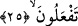

sâlih ve iyi olanın işini hep öne alırdım.”
İşte bu üç haslet sebebiyle Allah bu kulu kendine yaklaştırdı; onu kendisine mânen
yakın olan has ve hâlis kullarından kıldı. Hâlbuki başlangıçta Allah da insanlar da bu
adamı uzaklaştırmışlardı. Öyleyse akıllı kimse kalbini ve iç dünyasını islah etmelidir.
Hadis-i şerifte şöyle gelmiştir. “Elbette Allah sizin sûretlerinize ve mallarınıza
bakmaz. Bilakis kalblerinize ve amellerinize bakar.”[91] Yani şâyet kalpleriniz düzgün
ve amelleriniz sâlih olursa, Allah katında mutlaka makbûl kimseler olursunuz. Aksi
takdirde makbul olamazsınız. Ancak şunu da unutmamak gerekir ki, çoğu zaman ömrü,
günah ve sapıklıkla geçen bir insan, hidâyet bulup tevbe ve itâate muvaffak olabilir.
Çünkü insanın kötülüğü ârizîdir. Esas dikkat edilmesi gereken nokta, ezelî hüküm ve
aslî mutluluktur. Durum böyle olunca Allah bâtıl olan küfür ve inkârı mahveder; hak
olan îman ve İslâm’ı isbat eder. Bazen de ömrü tâat ve ibâdetle geçen bir insanın kalbi
mühürlenip sonu isyân hatta (Allah korusun) inkârla sonuçlanabilir. Mûsâ (a.s.)’a karşı
gelen Bel’am b. Bâûrâ (bk. A’râf, 7/175) ve nefsinin hevâsına uyan Bersîsâ gibileri ki,
bunların kötülükleri asıl, iyilikleri ârizî olmuştur.
Hafız şöyle demiştir:
Hüsn-i âkıbet rindlikle ya da zâhidlikle elde edilemez,
İşi Hakk’ın inâyetine bırakmak en iyisidir.
Yardımcımız yalnız Allah’tır.
25. O, kullarının tevbesini kabul eden, kötülükleri bağışlayan ve yaptıklarınızı
bilendir.
“O”, dilediği “kullarının” şirk dışında büyük küçük bütün günahlarını silen, onların
“tevbesini kabul eden, kötülükleri bağışlayan ve” hayır ve şer tüm “yaptıklarınızı
bilendir.”
Burada Allah’ın tevbeleri kabul eden bir zât olduğu haber verilmiştir. Zîrâ Allah’ın
tevbeleri kabul etmemesi, kulları günahlara teşvik mânâsı ifâde eder. Ayrıca “kabul”
kelimesi tecâvüz yani günahlardan vazgeçme mânâsını içerdiği için “__WORD__ /an” ile
müteaddî olmuştur.
Abdullah b. Abbas şöyle demiştir: Bu hüküm mümin-kâfir, dost-düşman herkes için
geçerlidir. Kim tevbe ederse Allah onun tevbesini kabul eder. Bilindiği üzere tevbe,
pişmanlık duyarak günahlardan dönmek ve artık bir daha asla o günahları işlememektir.
Sirrî Bûşencî der ki: Tevbe, hatırlandığı zaman günahların kalpte halâvet ve lezzetini